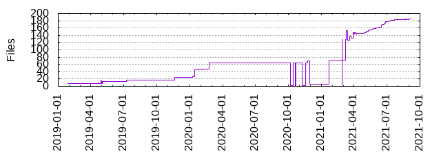

Files
- Total files
- 185
- Total lines
- 27684
- Average file size
- 7691.14 bytes

| Extension | Files (%) | Lines (%) | Lines/file |
|---|
| 8 (4.32%) | 926 (3.34%) | 115 |
| conf | 1 (0.54%) | 1 (0.00%) | 1 |
| css | 3 (1.62%) | 234 (0.85%) | 78 |
| enc | 2 (1.08%) | 16 (0.06%) | 8 |
| html | 3 (1.62%) | 361 (1.30%) | 120 |
| in | 1 (0.54%) | 8 (0.03%) | 8 |
| ini | 2 (1.08%) | 65 (0.23%) | 32 |
| ipynb | 5 (2.70%) | 3856 (13.93%) | 771 |
| jinja | 1 (0.54%) | 9 (0.03%) | 9 |
| json | 4 (2.16%) | 6233 (22.51%) | 1558 |
| md | 7 (3.78%) | 530 (1.91%) | 75 |
| png | 2 (1.08%) | 57 (0.21%) | 28 |
| py | 96 (51.89%) | 14099 (50.93%) | 146 |
| rst | 16 (8.65%) | 318 (1.15%) | 19 |
| sh | 3 (1.62%) | 154 (0.56%) | 51 |
| toml | 1 (0.54%) | 2 (0.01%) | 2 |
| txt | 5 (2.70%) | 236 (0.85%) | 47 |
| yaml | 18 (9.73%) | 120 (0.43%) | 6 |
| yml | 7 (3.78%) | 517 (1.87%) | 73 |